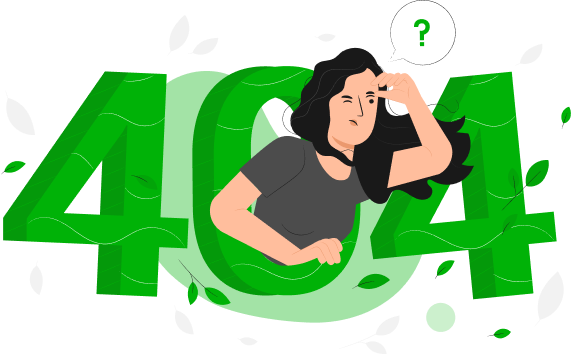

Oops! page not found
Ut consequat ac tortor eu vehicula. Aenean accumsan purus eros. Maecenas sagittis tortor at metus mollis
Ut consequat ac tortor eu vehicula. Aenean accumsan purus eros. Maecenas sagittis tortor at metus mollis